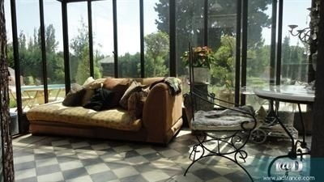

欧债危机的核心是政治问题。德法对欧洲统一的决心还是坚定的吧。@文茜小妹大:预言2012欧元区瓦解的专家包括诺贝尔奖得主Krugman，投资大鳄索罗斯；他们都错了。为何Krugman会错地如此离谱？因为他们低估欧洲政治领袖尤其德国议会力保希腊的决心。在美国国会是制造经济危机所在，在德国国会避开民粹，发挥代议士政治优点。Krugman来自美国，他假设政客只会屈服民意；他因此错了。
中国的物业税什么时候收啊？@文茜小妹大:法国总统奥兰德对法国富人开征75%所得税，另70万欧元资产者要再交财产税。结果引发法国农庄抛售潮，图为19世纪石头房，加盖玻璃屋，户外泳池，开价90万欧元。地点位于普罗旺斯首府亚维侬，换算起来比台北四十坪的内湖公寓还便宜。 
推荐大家看看Predator Nation这本书（网页链接），这本书告诉我们美国这一次金融危机是怎么回事。作者做了很多很强的结论，以前的根源是过去四十年对金融的放松管制，政府与金融业为了圈钱勾结从事了一系列违法操作，吹起泡沫，这些人都该进监狱。强烈推荐一读。
The Atlantic: What’s Inside America’s Banks? 网页链接 我们把积蓄存到这些大银行里,拿着储蓄账户只有0.2X%的利率（即使定期也不到1%），这些大银行拿着我们的钱在那做复杂的金融衍生品交易？这世界上还有没有做简单的存款贷款的银行？还是这世界上只剩下赌场一种投资方法了？

 网页链接
网页链接